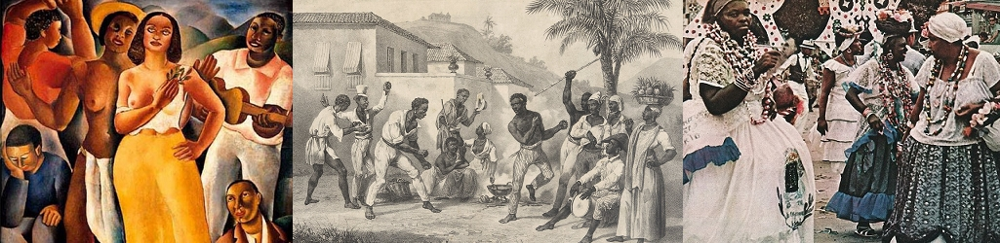

História do Samba
O samba nasceu na Bahia, ele é o casamento entre diferentes estilos de músicas, o que deu origem a algo único. Tudo começou com a época de escravidão no Brasil, e a chegada de negros escravizados da época, que trouxeram com eles um pouco da sua terra em forma de música, dentre essas um estilo chamado semba se destacou, este que se misturou com estilos de europeus como a polca, valsa, entre outros. Essa música foi se modificando mais e mais ganhando novos instrumentos em sua melodia criando os primeiros sambas. O samba era por muitas vezes executado ao fim das rodas de capoeira e até mesmo ao fim das giras de umbanda, e com o tempo finalmente veio a abolição da escravatura, mas mesmo com essa “liberdade”, o povo escravizado e suas culturas como o samba, capoeira e o candomblé, continuaram vítimas do preconceito, sendo considerado até mesmo crime a prática do samba nessa época.
Samba Carioca
O samba carioca foi o grande responsável por esse gênero musical tornar-se um patrimônio nacional. O samba no Rio de Janeiro originou-se no início do século XX, no começo ainda com certa relação as raízes do samba baiano, mas tendo um grande avanço em 1916, com a composição do primeiro samba gravado, “Pelo Telefone” por Donga e Mauro de Almeida. Desta forma o samba carioca foi tomando sua forma, com um estilo maxixado ia se diferenciando dos sambas de outros estados.
A trajetória do samba carioca é muitas vezes até simplificada pelo samba enredo, estilo de samba utilizado no carnaval. Mesmo as escolas de samba surgindo nos anos de 1920, foi por volta de 1930 que o carnaval carioca começou a ganhar seu destaque, período em que houve os primeiros desfiles de escolas de samba, o diferencial do samba no carnaval está nas músicas pensadas para essas festas, abordando nelas a temática trazida pela escola para o desfile. O samba carioca teve um crescimento avassalador com o passar dos anos, de forma a deixar o samba brasileiro como uma das maiores festas do mundo.
Samba Paulista
Originado no samba rural da Bahia, é uma decorrência da migração de negros, descendentes de escravos que buscavam melhores condições de trabalho. Esses que absorveram toda a dança e a prática do samba e trouxeram para São Paulo este conhecimento, originando o samba rural no interior do Estado. Os sambas adentraram na paisagem sonora urbana da capital, através dos sambistas do Largo da Banana, até reverberar pela primeira vez nas denominadas “Micro-Áfricas”, um território dentro da cidade, levando os ritmos derivados das batucadas.